Cloud Coffee
Coffee Beyond the Coffee Belt
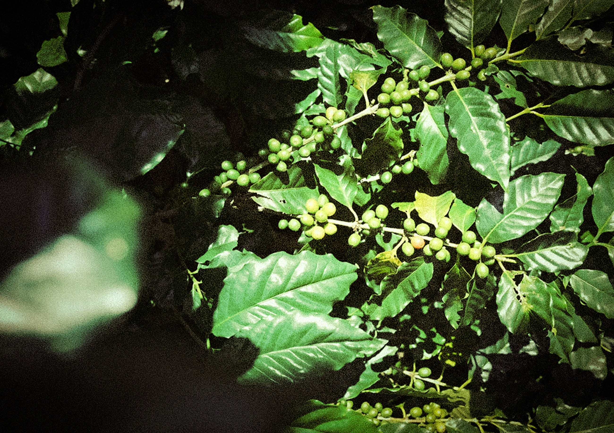
Hong Kong lies outside the traditional Coffee Belt, yet recent experiments have shown that coffee can still be cultivated locally. Coffee flavour is shaped not only by variety, but also by origin, climate, humidity, altitude, fermentation and roasting. For Cloud Coffee, the true distinction lies in the environment that nurtures the bean. The project therefore shifts attention from the bean itself to Hong Kong's landscape, climate and spirit of experimentation.
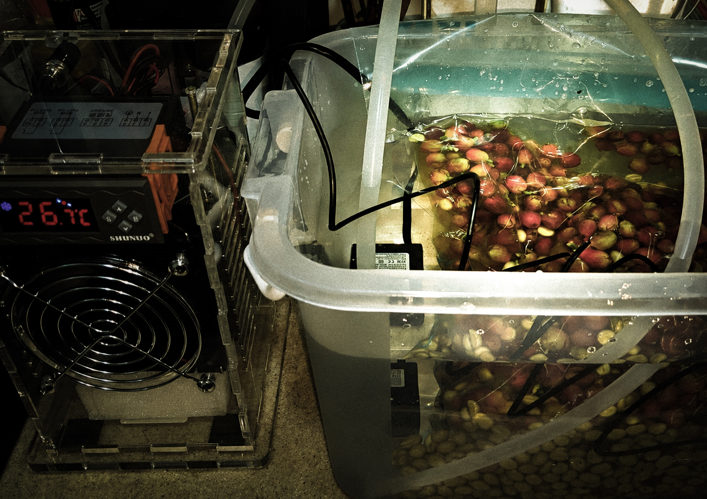
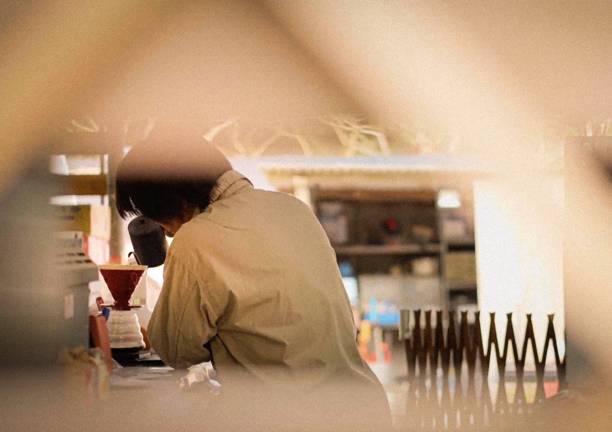
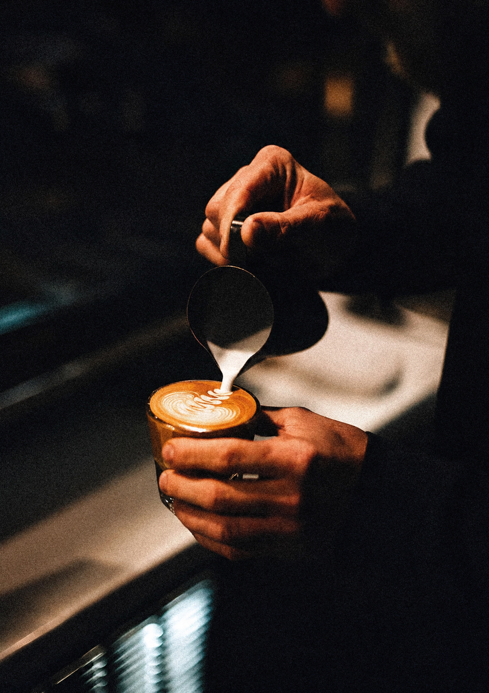
From Bean to Environment
Cultivation, fermentation, roasting and preparation are understood as one connected process. Each stage changes the character of the cup, but none can be separated from the conditions in which the coffee is grown.
The project therefore looks beyond the bean and treats origin, humidity, terrain and production as parts of the same design story.
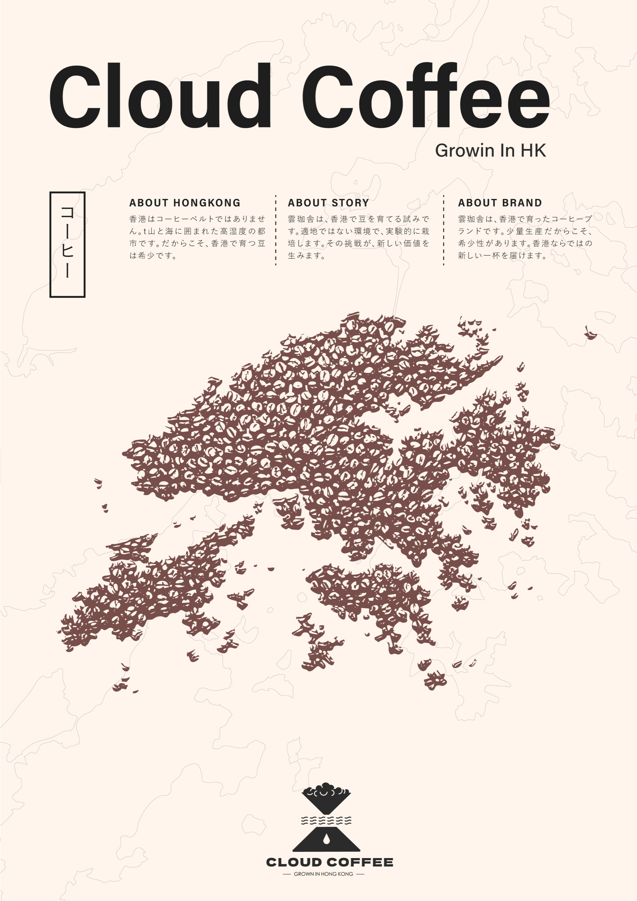
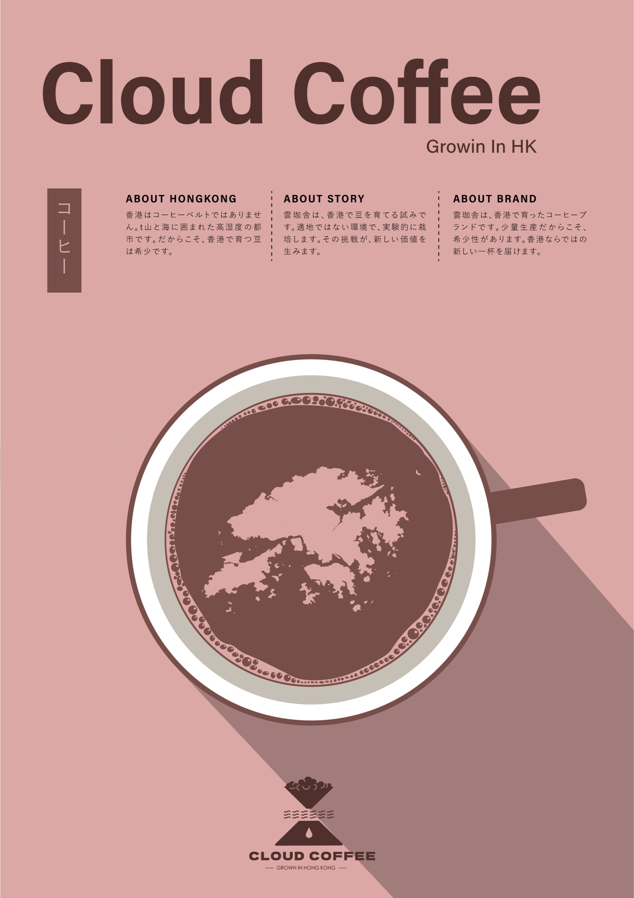
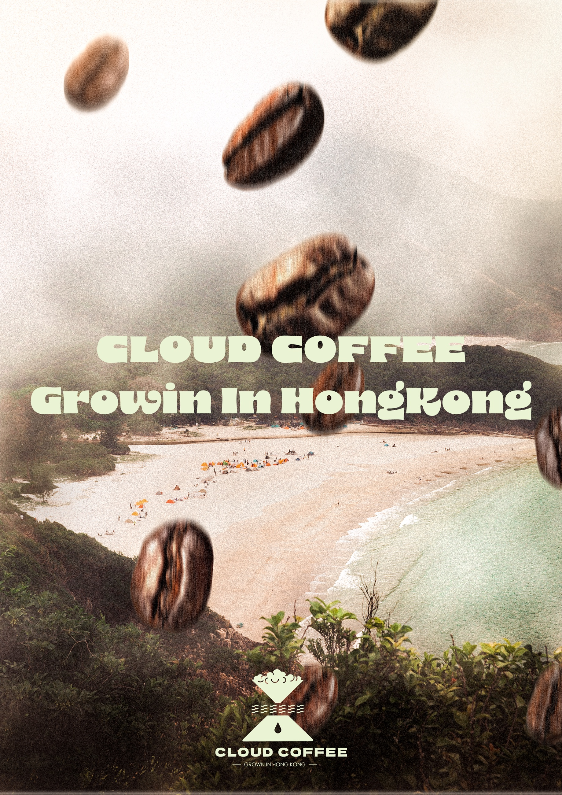
A Brand Shaped by Place
Hong Kong's mountainous coastline, changing weather and dense urban geography provide the identity with a more specific point of view than the coffee bean alone.
The visual language turns those environmental qualities into a compact mark and a restrained system for print and communication.
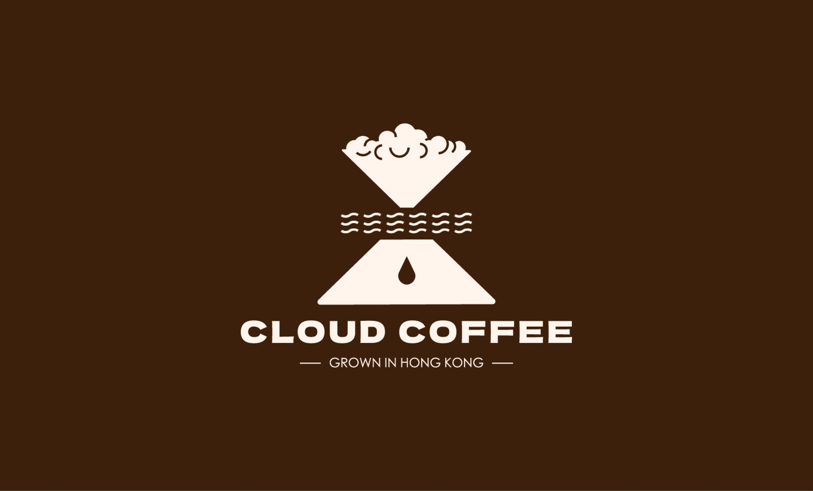
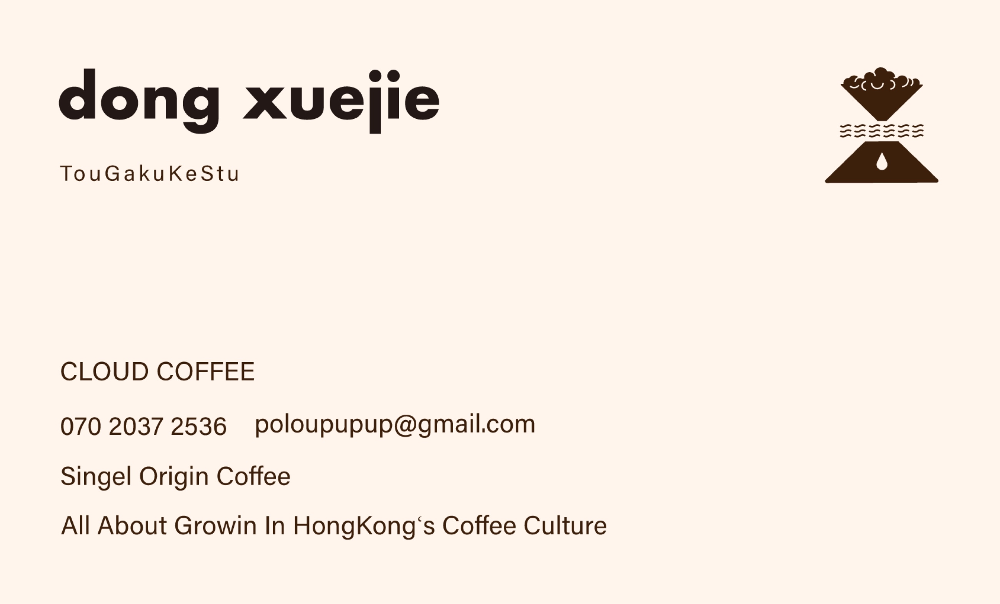
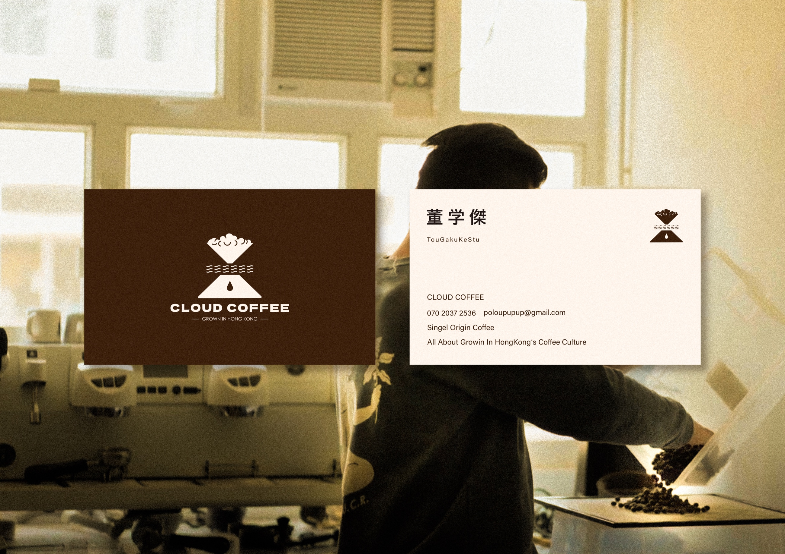
Cloud, Water, Mountain, Coffee
Clouds, water, mountainous terrain and a coffee drop are reduced into a single visual vocabulary. Together they describe a product whose identity depends on climate and place.
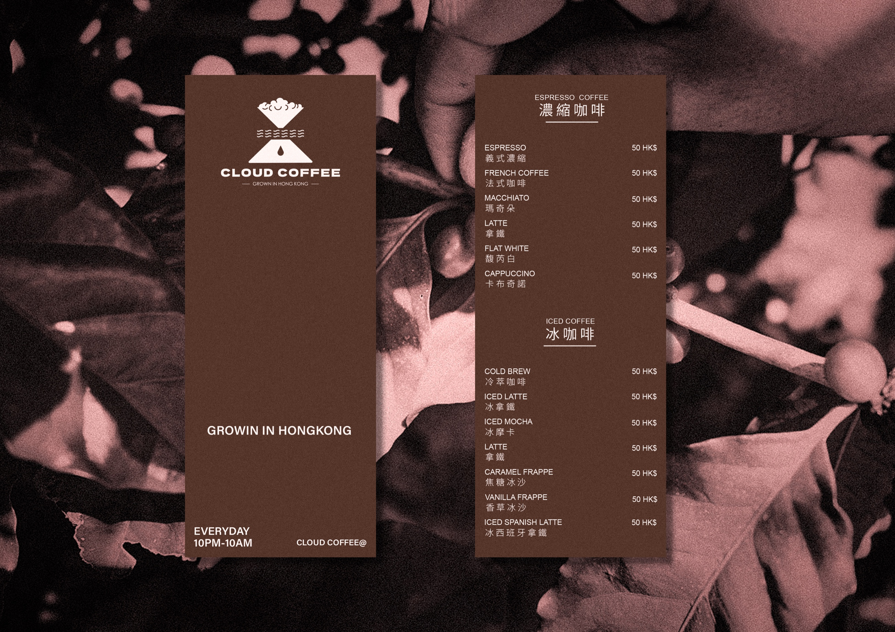
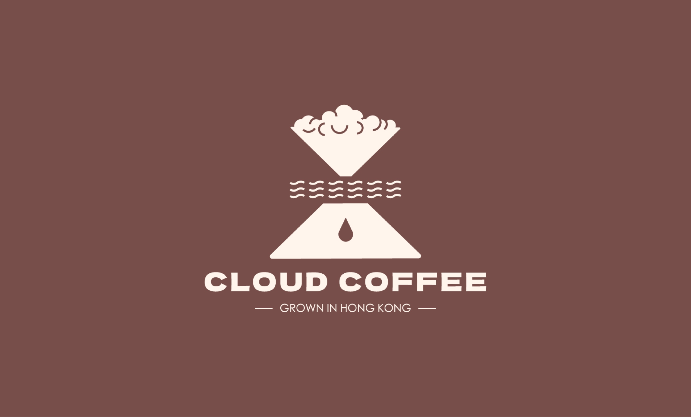
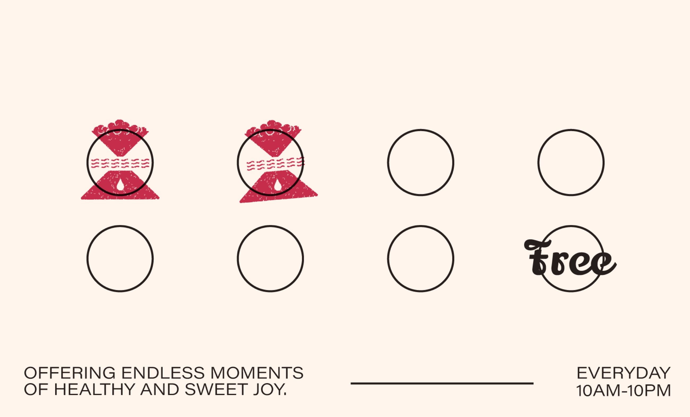
A System in Everyday Use
The identity extends across menus, printed cards, loyalty materials, apparel and campaign imagery without changing its core structure.
Across each touchpoint, the system remains quiet, recognisable and connected to the environmental idea behind the project.
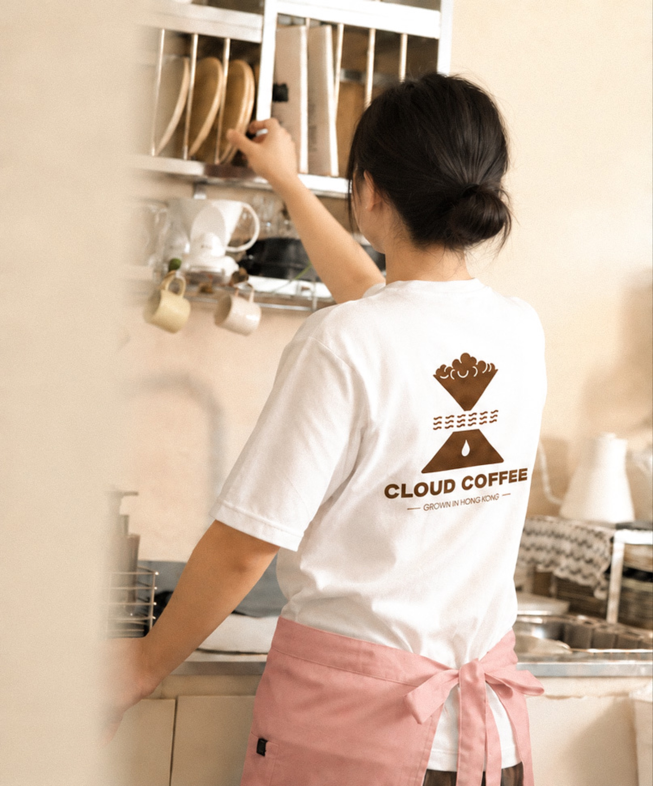
An Experiment in Flavour
Cloud Coffee is more than a coffee brand. From cultivation and fermentation to roasting and communication, it is an ongoing experiment in discovering a flavour shaped by Hong Kong.